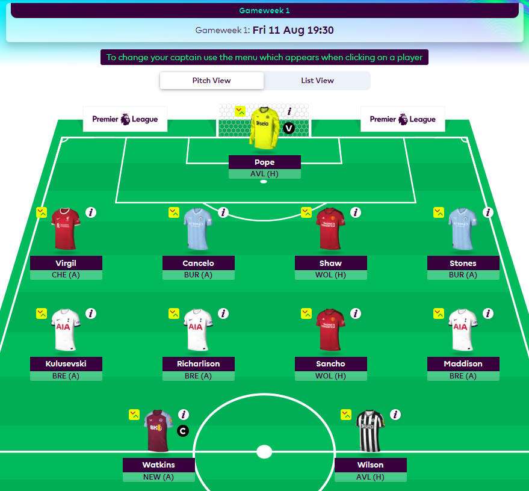
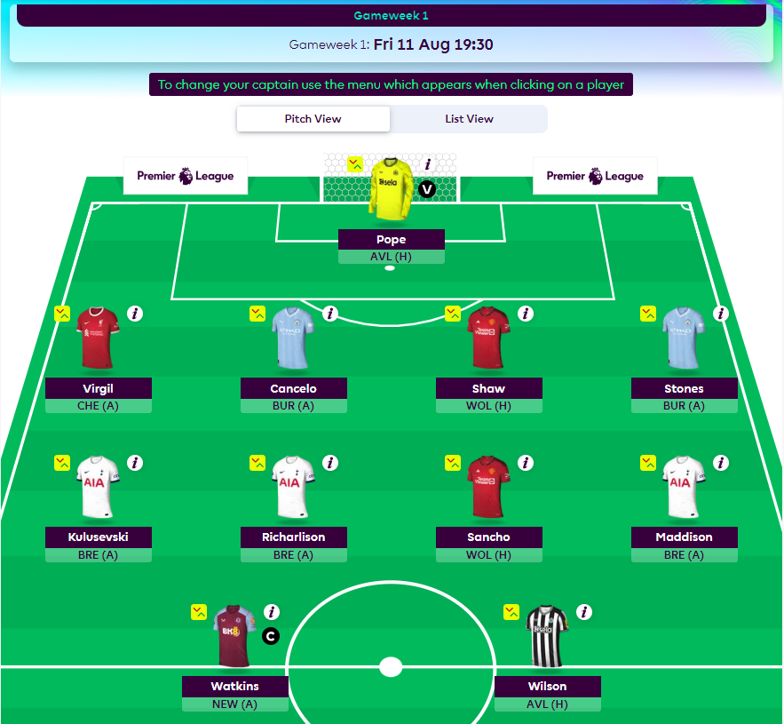

Rozpocznij przygodę z Fantasy Premier League
O mnie
Kawałek historii
Na kalendarzu wybił sierpień 2023 roku, a to oznacza, że najlepsza liga świata już tuż, tuż za
rogiem. 11 sierpnia startuje kolejny sezon Fpl-a, a więc rozpocznie się kolejny rok zmagań z
innymi graczami, o jak najwyższą lokatę na koniec sezonu.
To będzie mój
"jubileuszowy" 10 sezon. Mam nadzieję, że to będzie "TEN SEZON" w moim wykonaniu i
wyprzedzę konkurencje, jak Pan z koszulki w sezonie 2008/2009. Po cichu liczę, że uda pobić mi
się swój rekord tj. 105 miejsce na świecie z sezonu 2016/2017.
Fantasy Premier League to nieodłączna część mojego życia.
Od
sierpnia do maja ciągłe rozkminy nad składem, analizy, śledzenie wyników. To wszystko okraszone
chwilami szczęścia, jak i smutku. Na mojej stronie będę dzielił się poradami, przemyśleniami
oraz newsami związanymi z Fantasy.
Jak grać?
Aby rozpocząć swoją przygodę, należy zarejestrować się na stronie Fantasy Premier
League. Zajmie to dosłownie chwilę.
Konto stworzone? Znakomicie! Teraz
czas stworzyć drużynę
składającą się z 15 zawodników. Budżet, który posiadamy na skompletowanie
całego zespołu to 100£. Potrzebujemy niżej wymienionych zawodników:
- 2 bramkarzy
- 5 obrońców
- 5 pomocników
- 5 napastników
Prawdziwa zabawa rozpoczyna się właśnie teraz, po złożeniu całej drużyny!
Czas wybrać
wyjściową 11-stkę z 15 dostępnych nam zawodników, których zakupiliśmy do naszej
drużyny. Wybrani piłkarze, którzy wybiegną na boiska Premier League w danej kolejce, będą
punktować na naszej wirtualnej murawie.
Wyjściowa 11 wybrana, a więc czas wybrać kapitana
oraz vice-kapitana drużyny! Nasz kapitan w danej kolejce będzie zdobywał punkty
x2. Vice-kapitan wkracza do akcji, jeśli okaże się, że nasz kapitan nie rozegrał
ani minuty w danej kolejce. Ważnym wyborem jest także ustawienie naszych zawodników
rezerwowych. W przypadku braku gry, któregoś naszego zawodnika z podstaowego
składu, w jego miejsce wskakuje rezerwowy umieszczony na pierwszy slocie ławki.
Wybieraj mądrze!
Po każdej kolejce przysługuje nam jeden darmowy
transfer. Maksymalnie darmowych transferów możemy zebrać dwa. Każdy kolejny będzie
kosztował odjęte 4 punkty od naszego przyszłego dorobku punktowego w nadchodzącej
kolejce.
Deadline na dokonanie wszelakich zmian związanych z naszą drużyną,
mamy podany nad naszym składem.
Jeśli nasza drużyna jest gotowa, możemy
również raz w sezonie wybrać jeden z 4 dostępnych chipów:
- Bench Boost
- Triple Captain
- Free Hit
- Wildcard*
*W przypadku Wildcarda, możemy włączyć chipa dwukrotnie w trakcie
sezonu.
Szczegółowe omówienie chipów znajduje się na oficjalnej stronie Fpla, do której
odsyłam.
P.S. Pamiętaj, aby na koniec zapisać wszystkie zmiany, które dokonałeś,
przez kliknięcie przycisku "Save Your Team".
Skarbnica wiedzy
Polecani zawodnicy GW1
Newsy
Tweets by FPLTrackerNewsy
Tweets by FPLTrackerNewsy
Tweets by FPLTrackerNewsy
Tweets by FPLTrackerNewsy
Tweets by FPLTrackerNewsy
Tweets by FPLTrackerNewsy
Tweets by FPLTrackerNewsy
Tweets by FPLTrackerAs Wywiadu
Głos oddany
Kapitan na GW1
Mój skład GW1
Wynik z GW0
As Wywiadu
Głos oddany
Kapitan na GW1
Mój skład GW1
Wynik z GW0
Kontakt
Skontaktuj się ze mną poprzez Social Media lub formularz kontaktowy
Wiadomość została wysłana
Adres e-mail jest niepoprawny
Wyrażam zgodę na przetwarzanie danych przez Fantasy Premier League Polska w celu realizacji formularza, zgodnie z Polityką Prywatności.